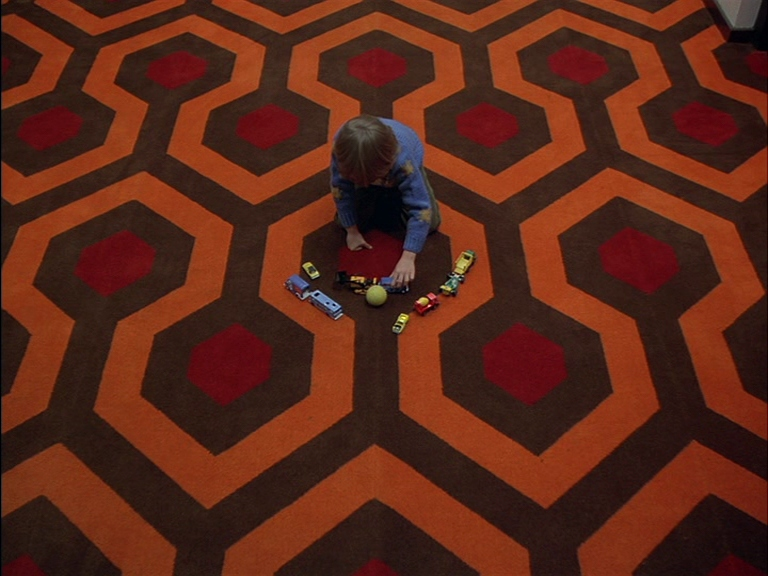

IHFILM-260-01 Introduction to Film Analysis

Fall Semester 2022
4 credits
Tuesday 10:00 a.m.-1:30 p.m.
Parker Hall - Drenan Auditorium
Dr. Martin Roberts
Office hours: Thursday 4:00-6:00 p.m.
Office location: Media Arts 124
Email: martin.roberts@keene.edu
Github repository | Web syllabus (outside Canvas)
Description
This course is designed to equip students with the tools necessary to become critically aware and capable film viewers by introducing elements of film form, processes of textual analysis, a variety of cinematic techniques used in narrative and non-narrative cinema, and other models of critical analysis used in film criticism.
Outcomes
After completing the course, students should have acquired the following skills:
- Ability to analyze technical/formal components of film narratives (shot composition, cinematography, editing, use of color, sound, narrative structure, genre, or style) as a path to understanding their intended meanings
- Basic understanding of major interpretative frameworks by which film narratives can be analyzed and ability to apply one or more of these frameworks to the analysis of specific film narratives
- Understanding of methodological and stylistic differences between forms of writing about film, including movie reviews, critical essays, theoretical essays, fan discourse
- Ability to deploy the above analytical skills in critical essays that analyze the meaning of films as cultural texts
Reading Assignments
Michael Ryan and Melissa Lenos, An Introduction to Film Analysis: Technique and Meaning in Narrative Film. Second edition. New York: Bloomsbury Academic, 2020 (first published 2012).
This text is on order from the KSC Bookstore, or can also be ordered online either as a paperback or e-book.
Also recommended: Timothy Corrigan, A Short Guide to Writing About Film. Seventh edition. New York: Longman, 2010.
Screening Assignments
- There is a weekly viewing assignment, which is based on the second reading assignment for the week. In some cases films will be available for streaming via Canvas; if not, they will be available at the library on DVD.
NB: You are expected to have watched the film listed for a given week before the class in question.
Apocalypse Now
Arrival The Godfather
Gold Diggers of 1933
High and Low
In the Mood for Love
Mildred Pierce
The Searchers
The Shining
The Silence of the Lambs
Vagabond
Working Girl
In addition to the assigned film for the week, when you are presenting either on one of the Part One or Part Three chapters of the textbook, you will be expected to watch the film selected from the “Student Assignment” section at the end of each chapter.
For the Close Viewing paper (see Assignments), you will select a film other than the main assigned film for the week from as the focus of your paper, and present one example clip from it during the Close Viewing class to which you are assigned.
Class format
Beginning in Week 2, each class session will be divided into two halves, with a short break between each. In the first half, we’ll discuss a chapter from Part One of the course textbook (Technique & Meaning); in the second half, we’ll discuss a chapter from Part Three (Critical Analysis).
Each week beginning in week 2, a group of three students will be assigned to host a 30-minute discussion of the reading assignment in the first half of class (i.e., there will be one group in the first half and a different group in the second half). Group assignments are made randomly.
Every third week, the first section of class will focus on one of the five case study films from chapters 9-13 of the textbook (Close Viewings). The second half of class will be a panel consisting of 3 presentations (for details, see Assignments).
Assignments
Agenda (20%)
5 posts on Canvas discussion forum: a short paragraph with notes and/or
questions on the reading/viewing assignments for the week. NB: not
required in any week when you are assigned to any of the other
assignments below.
Technique & Meaning (20%)
Choose one of the Student Assignments at the end of the chapter for the
week, or an example of your own. Obtain a copy of the clip in the
assignment and write an analysis of 500 words in response to the
assignment prompt. Screen the clip in class with your discussion of it.
3 students weekly.
Critical Analysis (20%)
Choose one of the Student Assignments at the end of the chapter for the
week, or an example of your own. Obtain a copy of the clip in the
assignment and write an analysis of 500 words in response to the
assignment prompt. Screen the clip in class with your discussion of it.
3 students weekly.
Close Viewings Paper (20%)
Presentation of Close Viewing paper (4-5 pages / 1,000-1,250 words) on
an approved film.
Comparative Analysis Paper (20%)
Comparative analysis of a theme and/or stylistic device in 1-3 films
from the standpoint of one of the analytical frameworks covered in the
course.
Deadline: Tuesday 13 December.
Online Resources
Criterion
Justwatch
Kanopy (Keene
Public Library; if you don’t have one already, please apply
for card)
Metrograph
Mubi
Spamflix
Movie
Database
Schedule of classes
Week 1 (Tues 08/30)
Introduction: Opening Sequence
Read: Ryan and Lenos, An Introduction to Film Analysis, Introduction
Week 2 (Tues 09/06)
Read: Ryan and Lenos, An Introduction to Film Analysis, chs. 1, 14
Watch: Gold Diggers of 1933
Week 3 (Tues 09/13)
Read: Ryan and Lenos, An Introduction to Film Analysis, ch. 2, 15
Watch: Silence of the Lambs
Week 4 (Tues 09/20)
Read: Ryan and Lenos, An Introduction to Film Analysis, ch. 3, 16
Watch: Working Girl
Presentation groups:
Technique & Meaning 1
Critical Analysis 1
Week 5 (Tues 09/27)
Read: Ryan and Lenos, An Introduction to Film Analysis, ch. 4, 17
Watch: Mildred Pierce
Presentation groups:
Technique & Meaning 2
Critical Analysis 2
Week 6 (Tues 10/04)
Read: Ryan and Lenos, An Introduction to Film Analysis, ch. 5, 18
Watch: Get Out
Presentation groups:
Technique & Meaning 3
Critical Analysis 3
Week 7 (Tues 10/11)
Read: Ryan and Lenos, An Introduction to Film Analysis, ch. 6, 19
Watch: Apocalypse Now
Presentation groups:
Technique & Meaning 4
Critical Analysis 4
Week 8 (Tues 10/18)
Read: Ryan and Lenos, An Introduction to Film Analysis, ch. 7, 20
Watch: The Godfather
Presentation groups:
Technique & Meaning 5
Critical Analysis 5
Week 9 (Tues 10/25)
Read: Ryan and Lenos, An Introduction to Film Analysis, ch. 8, 21
Watch: The Searchers
Presentation groups:
Technique & Meaning 6
Critical Analysis 6
Week 10 (Tues 11/01)
Close Viewings 1: High and Low
Read: Ryan and Lenos, An Introduction to Film Analysis, ch. 9
Watch: High and Low
CV Panel 1
Week 11 (Tues 11/08)
Close Viewings 2: The Shining
Read: Ryan and Lenos, An Introduction to Film Analysis, ch. 10
Watch: The Shining
CV Panel 2
Week 12 (Tues 11/15)
Close Viewings 3: In the Mood for Love
Read: Ryan and Lenos, An Introduction to Film Analysis, ch. 11
Watch: In the Mood for Love
CV Panel 3
Week 13 (Tues 11/22)
Close Viewings 4: Vagabond
Read: Ryan and Lenos, An Introduction to Film Analysis,
ch. 12
Watch: Vagabond
CV Panel 4
Week 14 (Tues 11/29)
Close Viewings 5: Arrival
Read: Ryan and Lenos, An Introduction to Film Analysis, ch. 13
Watch: Arrival
CV Panel 5
Week 15 (Tues 12/06)
Presentation of final projects
Reading Day (Mon 12/12)
Exam period (Tues-Fri 12/13-16)
Policies & Protocol
Attendance Since this class meets only weekly, attendance is particularly important. Students are allowed one absence per semester. Two absences will lower your final grade half a letter grade. Three absences will lower your grade a whole letter grade. Any more than three absences, regardless of the reason, and students will have to withdraw from the course (in accordance with Keene State College student handbook). Come and talk to me if you have any problem in attending the class.
Keene State policy: A student who misses more than 3 weeks in the first 10 weeks of the semester (regardless of the reason, including excused absences and emergencies) must withdraw from the course. The student must follow the regular withdrawal procedure. The complete KSC attendance policy can be viewed at http://www.keene.edu/registrar/policy/policy.cfm#6
Readings & assignments
Readings assigned for each week should be completed prior to the class meeting. Assignments are due at the beginning of the class unless stated otherwise. Please do not email submissions.
Discussion & participation
Class discussion (i.e. your participation) is one of the most essential parts of this class. Please come to class fully prepared—both intellectually and physically. Also keep in mind that we always need to work together in order to create a productive and inspiring academic environment by being polite and respectful toward other students’ comments and ideas. In order to ensure your full participation and engagement in class, the use of laptops and/or mobile devices during lectures, discussion, and screenings is not permitted.
Academic honesty
We understand and agree that we are participating in higher education. We respect this process and will act as mature and responsible individuals in it. To ensure that, all students are expected to hand in original written work. Using other people’s words without proper attribution constitutes plagiarism. Plagiarism and any other forms of cheating will result in an F for the assignment and may include further College sanctions. In this class, every student must be aware of and adhere to the college’s policy on academic honesty. Detailed procedures and processes pertaining to the Policy on Academic Honesty can be viewed at http://www.keene.edu/policy/academichonesty.cfm (Links to an external site.)Links to an external site.